|
Roda JC - Wisla Krakow (5-2) 24 januari 2003 |
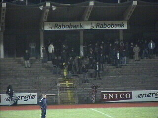
Voor 600 toeschouwers was er op Kaalhei een
nostalgische avond te beleven bij de oefenmatch
Roda JC - Wisla Krakow uit Polen.
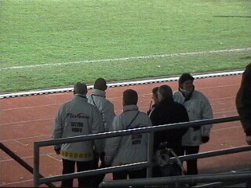
Top-overleg aangaande de northsiders.
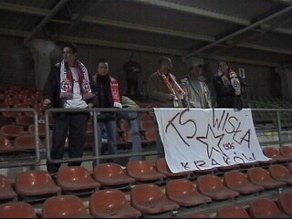
Toch nog enkele Krakow-supporters.
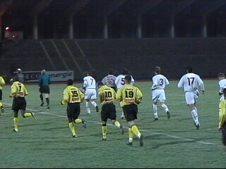
De spelers betreden de historische grasmat van
Kaalheide.
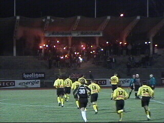
Ze worden begroet met tientallen vuurtoortsen.
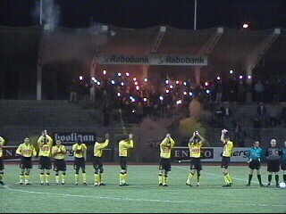
Dampen stijgen op.
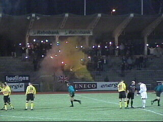
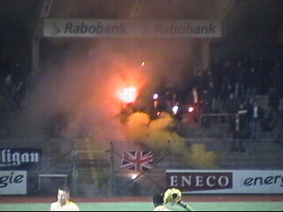
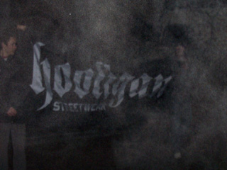
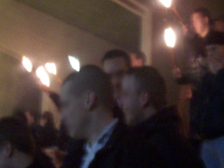
De sfeerverlichting.
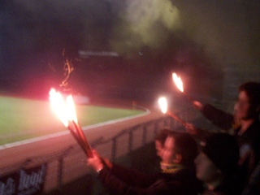
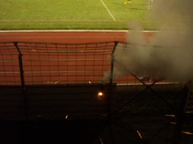
Wie herinnert zich dat zichtbelemmerende hek
niet
meer?
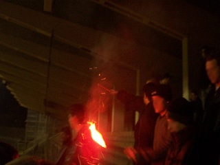
RODA JC de club met twee fantastische stadions!
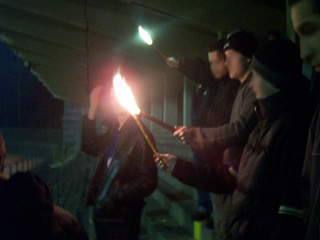
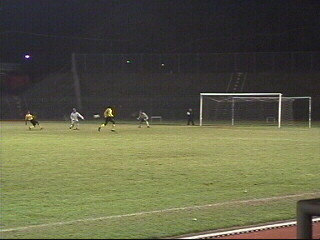
Mooie goal van Sergio in de 18e minuut.
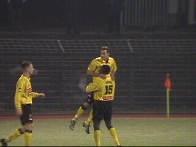
Sonko's push up!
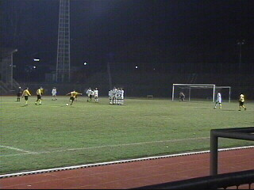
In de 30e min. knalt Luijpers 2-0 binnen uit een
vrije trap
die via de rechter- en linkerpaal het
doel in gaat.
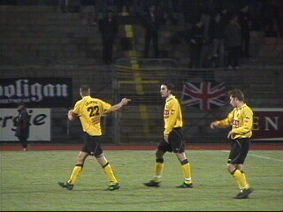
Van Dijk en Vicelich vormden een goed span op
het
middenveld.
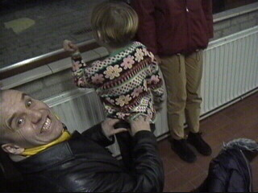
Pappa Izz.
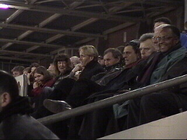
Pappa Rudge en Eric tussen de notabelen.
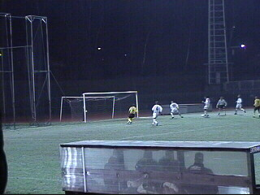
In een boeiende wedstrijd met veel doelpunten
wordt het
in de 90e min. 5-2 door een eigen goal
van de Polen.
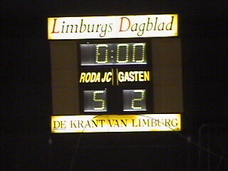
Het scorebord functioneerde zowaar!
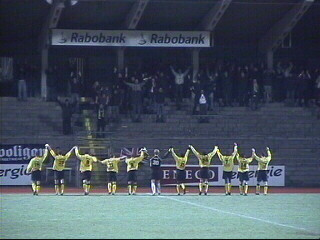
Alsof de tijd is blijven stilstaan......
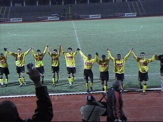
Ook zuid kreeg een bedankje.
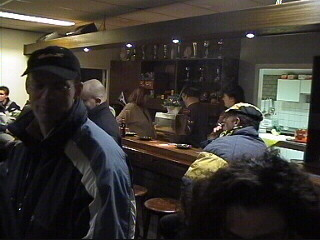
Alleen de kleine kantine was vanavond geopend.
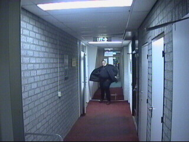
Een vrolijke stadion-omroeper.
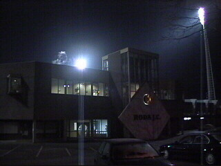
We'll never forget Kaalhei!
Thanx Koffieboer en Marco voor deze foto's.
© Koempels
Pleasure Dome